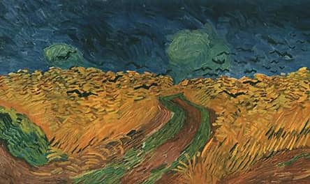

Campo de trigo e corvos (1890)
Os girassóis (1889)

Terraço do café à noite (1888)


Campo de trigo e corvos (1890) |
Os girassóis (1889) |
Terraço do café à noite (1888) |
||||||
A noite estrelada (1889) |
Oliveiras (1889) |
Lírios (1889) |